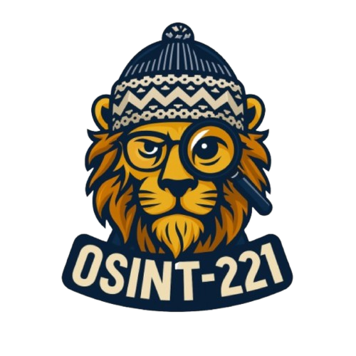
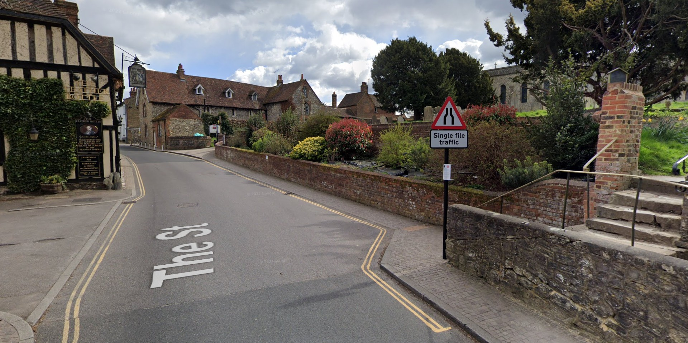
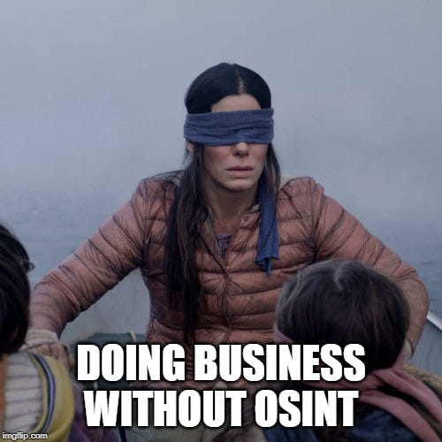

MAGAZINE
OSINT-221
Veille • Investigation • Cybersécurité
> Découvrez les dernières actualités, outils et analyses pour maîtriser l'intelligence en sources ouvertes.

Veille • Investigation • Cybersécurité
> Découvrez les dernières actualités, outils et analyses pour maîtriser l'intelligence en sources ouvertes.
Bienvenue dans cette première édition du Magazine OSINT-221, une initiative communautaire née de la volonté de renforcer les capacités d'OSINT au Sénégal.
L'OSINT (Open Source Intelligence) représente bien plus qu'une simple technique d'investigation. C'est un levier essentiel pour la cybersécurité et la lutte contre la désinformation dans notre contexte national.
Notre mission est de démocratiser ces compétences et de former la prochaine génération d'analystes. Ce magazine se veut un espace d'intelligence collective.
— L'équipe OSINT-221

Un groupe de hackers revendique l'exfiltration de 139 TB de données de la DAF sur le Dark Web. Une cyberattaque majeure touchant le Sénégal.
LIRE east
La Direction Générale de la Police Nationale lance une plateforme dédiée au signalement des infractions cybercriminelles.
LIRE eastAfricaCheck décrypte les images de la manifestation à l'UCAD et la vérification des faits sur les événements récents.
LIRE east
Un mémo du ministère de la Justice américain révèle qu'Epstein aurait eu un pirate informatique personnel.
LIRE east
L'OSINT détourné pour produire du doute, du ciblage et de la désinformation à l'ère de la post-vérité.
LIRE east.png)
Une faille de sécurité majeure permet le vol de jetons d'authentification et compromet les systèmes IA.
LIRE eastUne pépite qui répertorie tous les affrontements et manifestations dans le monde. Idéal pour la veille géopolitique.
language berthoalain.comVisualisation interactive des connexions et réseaux complexes liés à l'affaire Epstein.
hub epsteinvisualizer.comOutil de monitoring global pour suivre les événements critiques et les flux d'informations en temps réel.
terminal github.com/worldmonitorOutil puissant pour l'analyse et la recherche d'identités à travers diverses plateformes sociales.
person_search github.com/TheBigBrotherPentester IA autonome qui identifie et exécute de réels exploits (injections, bypass d'auth) pour valider la vulnérabilité des applications web.
security github.com/shannonPlateforme de formation incontournable pour maîtriser les fondamentaux de l'intelligence en sources ouvertes.
school mooc.osintfr.comSource : OSINT4FUN
Un personnage atypique se trouvait dans cette rue en novembre 2022.
Savez-vous de qui il s'agit ?

task_alt Répondre au challenge